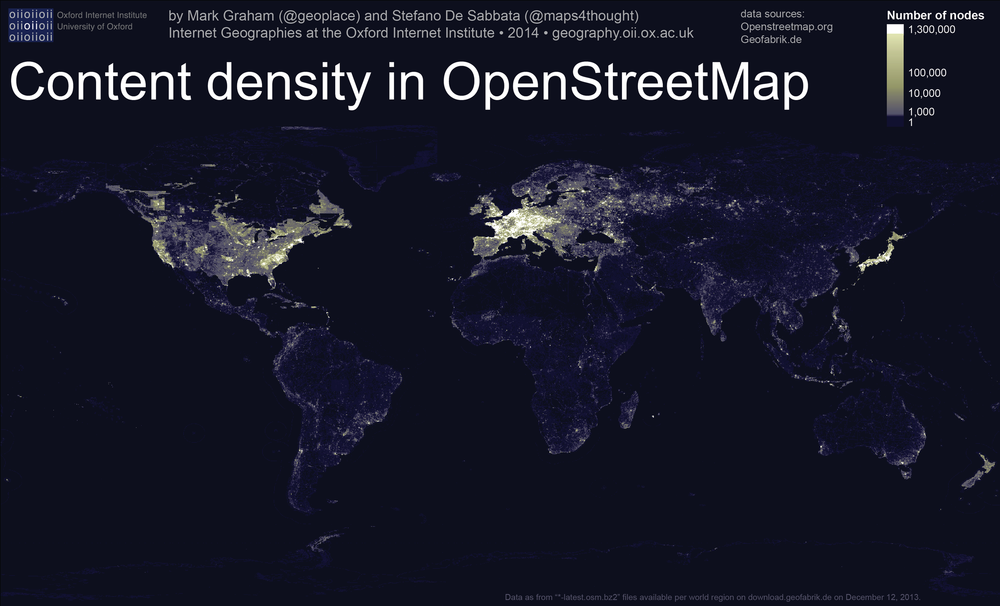

A close reading of "Towards a Study of Information Geographies"
By Diane Bada | 3 May, 2022

Introduction
In relation to the reading, “Towards a Study of Information Geographies”, this essay will explore the aims, methodology, results, and conclusion of the reading. In addition, I will provide other relevant sources to compare and analyze similarities or differences those have in relation to the original reading. In the introduction of the reading, readers are introduced to the idea that information has geography, simply meaning that information will always be connected to places and between places. In addition to that, information also exists physically, whether it’s in books, documents, newspaper articles, etc. The core value of immutable information stems from the fact that when information is being transported between several locations, there are no changes to the core of the information itself. According to Graham et al, to define (im)mutable augmentations is simply to view something that does not change (Graham et al, 2015). An example is used, by the view of the world map. The world map is used as the unchanging factor, but the map is altered a bit to show the different contexts in the space of the internet. What is the purpose of this, one might ask? Well, the (im)mutable augmentation of information gives people the affordance to access information that is based on geography. The result of geographic information emerging has come with its consequences, good and bad. An example of it is how geographic information can represent certain spaces, as well as not represent other spaces correctly or at all which we will delve into further within this essay. I will be delving into the three important topics explored in this article. Geographies of Access and Enablement, Geographies of Participation, and Geographies of Representation (Graham et al, 2015).
Geographies of Access and Enablement
Internet access is the one thing individuals request to get to advanced data these days. This article utilized information from the World Back that monitored the quantity of web clients overall to delineate a graph showing where most web clients are found. Because of this chart, it was apparent that there are more web clients in the Northern part of the globe than there are in the Southern part of the globe. This just demonstrates there is an absence of admittance to computerized data in the South. This finding is additionally shown by the broadband moderateness, which the article calls attention to. This information was gathered from the International Telecommunication Union on the cost of web association as a level of normal pay (Graham et al, 2015). Further exploration showed why the global South had less web access than the global North. As of late as 2002, there were just 6 million web clients in Sub-Saharan Africa and just 16 million in India, contrasted with the many millions today. This lop-sidedness came to fruition because of the geologies of web framework. A few regions of the planet in those days coming up short on means to associate with the world, as they are missing the mark on method for actual association that permit them to associate on the global Internet. In 2009 for instance, a few regions of the planet were preferred associated over others, for example, nations in East Africa that had no fibre optic network to associate with the remainder of the world. The absence of fibre optic cables implied the web was truly sluggish and the cost was high in East Africa contrasted with the remainder of the world (Goel, 2011). This article gave information that was shown on a guide which showed how the global South had disproportionally high broadband costs contrasted with the global North. This is displayed in figure 2, where the expense of web access in Africa is so high, with costs going from 10% to 25% of the typical individual's pay. This becomes risky as in, not every person can manage broadbands, as there are desperate conditions faced by individuals in Africa, web availability would be the most trivial part of their concerns. Though North America, South America, and Europe get broadband bundles that expense up to 10% of their pay, which isn't terrible. I comprehend the opinion about the expense of broadbands in Africa being so high in light of the fact that by and by, in South Africa, it's more costly to purchase internet data than to have a Wi-Fi plan set up at home. Thus, I can hardly comprehend the battle that others face since they can't actually afford to get a steady web association like Wi-Fi and need to depend on getting data. One way or the other, it can in any case overwhelm individuals' funds because of the expense of data overall.
Geographies of Participation.
The article focuses on three important aspects when it comes to analysing the distribution of internet participants. This section highlights how it can be problematic for the global South in participating within the internet if their level of creation and distribution of information on the web is low.
Domain Names
In the investigation completed, the circulation of domain names by nation was to a great extent tracked down in the United States and Europe. This just goes to repeat the way that the global North has an enormous and inconsistent portion of web support regarding domain. The justification for why this could be, as proposed by the article, is that a few nations have stricter rules around enrolling domain names, which could bring about keeping clients from getting to them (Graham et al, 2015). Africa's fundamental nonattendance is in all probability because of the aspects that limit the quantity of web clients like expense or inaccessibility. I additionally believe it's because of how less digitalized and how partially to uneducated nations in Africa are. An example would be South Africa and Nigeria. These two nations are among the top driving nations in Africa and are much of the time seen as cutting edge in numerous parts of the landmass. In this article, there was a presentation of the expansion between the two nations, in the last expansion, it showed Nigeria to have an enormous web people, as one would naturally suspect normally considering, how huge the number of inhabitants in Nigeria is. Be that as it may, South Africa was displayed to have more clients and more domain names. I think this is potentially contributed by how digitalized both these nations are or in the process of being. As an individual who's been to the two nations and has a profound history with both, I can say that South Africa undoubtedly adjusted itself more to the web and acquiring information about innovation and anything that positions one can track down on the web and with the utilization of innovation. While in Nigeria, information, and schooling is more centred around reasonable and conventional work positions like specialists, legal counsellors, and practitioners. The internet-based industry is as yet a new and blasting thing to them.
Distribution of collaborative coding
The following factor in considering geographies participation is the dispersion of collaborative coding. The article utilized GitHub to gather information, as this is the biggest stage that the web accommodates clients to impart their work to the general population along with team up on one another's work (Graham et al, 2015). By estimating the number of clients from a given country that utilization GitHub, there will be some data on how much is added to the programming local area. As per the article, the USA is leading concerning commitment, 35% of all commits came to GitHub (Graham et al, 2015). I allude to scholastics and information connected with nations or landmasses; I can validate that the USA is a driving force because of how popular coding is not only in terms of employment spaces but also in terms of school. Not at all like the global south, coding is educated to the youth from the age of 5. In this way, the obtain the information to make commitments and team up on GitHub.
Shockingly, Africa isn't on this rundown, as it just holds under 1% of GitHub clients on the planet. I wouldn't be amazed as I knew about GitHub barely a year ago. This measurement could be a consequence of the absence of information or familiarity with what GitHub is.
The Geography of Wikipedia.
Everybody is aware of Wikipedia and how it's anything but a solid source as anybody can simply alter anything on there. This is the biggest reference book and permits all web clients to partake in data by contributing or altering. This variable is utilized in showing a nations alters which shows how dynamic a nation is as far as adding to this huge base of information. Not surprisingly, the most dynamic clients seen are USA, GBR, France, and Germany. While contrasted with Africa in general, not many changes or contributions are recorded. This can be a consequence of issues that the global South generally faces with regards to the web, lack of internet access, high price for broadband connectivity, and other social implications (Graham et al, 2015). Social implications such as power, voice, and representation. For example, despite the fact that Wikipedia considers numerous dialects, the close to nonappearance of Arabic, Swahili, Hindi, and numerous other African and Asian dialects implies need deeper inquiries of power and representation (Goel, 2011).
Geographies of Representation
This aims to show what regions of the planet are addressed and what parts are underrepresented concerning the computerized world. To additionally break down and spot drifts, this article utilizes information from OpenStreetMap (OSM), Google look, and the Semantic Web to uncover how popular a nation is depending on how much data that can be given (Graham et al, 2015).
The data recovered depended on Google search information to find which nation had the most outcome shown. This is flawed as errors can occur here since the website page can make reference to nations with practically no information or data connecting with the said country. Therefore, information can become slanted as this is principally helpful for how much individuals discuss a country. Nonetheless, it actually fills in as it will assist with showing how famous a nation depends on the references found by Google (Graham et al, 2015).
OSM is a guide of the world (road maps), and the age of information is done by referring to streets and the layout of a country. This data is shown by the density of nodes in a country or continent. In this article, one can see that an augmented map is concealed in various shades of green to address the density of OSM nodes.
Corresponding to the map, one can see that USA and Europe have the most elevated typical densities of OSM hubs. This implies, more area information is accessible for these nations. This information shows which regions are accurately geographically represented an which are less or not at all. It explicitly shows that not much of content is made for or about the global South. This implies that a ton of spots and individuals are both metaphorically and in a real sense left off the map.
Additional Reading
Mark Graham: Inequitable Distributions in Internet Geographies – This chapter focuses on whether the increase of internet access is giving us the result of achieving equal digital participation or whether older patterns are repeating itself such as visibility, representation, and power (Graham, 2014).
The global digital divide is reminiscent of colonialism by Dhwani Goel. This reading discusses the global digital divide by discussing the disparities between developed and developing countries, in relation to access computing devices and information resources. It also speaks about how the global divide is reminiscent of colonialism as the digital gap is being led by tech companies primarily from the United States and China (Goel, 2011).
Aims: Towards a Study of Information Geographies
The aim of this article was to highlight the problem that large areas of the world face. Where the internet is not accessible to others than it is to some others. In addition to that, the aim was to graphically show the disproportion in digital information access, and this came with maps to convey a better and simpler to understand to readers. This a subject that hasn’t had much research invested in it, and so this article also aims to open a new area of study in order to gain more understanding and possibly a solution to the problems discussed in this paper.
Methodology: Towards a Study of Information Geographies
The methodology used in this article to gather information was collecting evidence from different organizations such as Google’s data and organize the information in a way where it can be displayed for interpretation and comparison, like on maps. They provided a general analysis of the data collected between the global North and South. They conducted global surveys and overall tried to keep things visual, colourful and readable texts. I would say that this methodology is effective as it effectively showcased the inequalities in digital information access on a global scale, in a manner where it was not too straining on the mind, in a digital and visual manner. Which is effective, as the world is more visually stimulated with the use of graphics than having to read texts and long numbers. However, according to the article itself, this data is not extensive as it should have been as it mostly uses generalized data. However, since this a field that hasn’t had much research done, it’s only expectant of them to use generalized data, however, more data should be retrieved on a global and local scale, to make it findings more reliable.
Conclusions: Towards a Study of Information Geographies
From all the information, analytics, graphs, and maps shown in the paper, it’s with no doubt that the information that is available on the internet, is indeed not available to everybody. There are many places in the world, especially the global South, as we have seen, that have little to nothing in terms of digital information access, contribution, and representation. There are many aspects that contribute to this divide that we have seen. Although, more people have access now, than in 2002, there are still many social implications preventing people to accessing information from the internet or being representing or contributing. It’s still seen that the global South, which historically has been a place of inequality, still now, is not as privileged as the global North in terms of the level of access, contribution, and representation. Even though along the years, that divide has been made to become less and less, it’s still there and evident as ever. However, as mentioned before, social implications play a huge role in conquering that divide. Equally important issues are issues such as, literacy and education, physical infrastructure, governance of online activities, digital architecture, and politics interference. In other words, there is no single proven answer to the uneven geographies of information and voice that exists today. it’s important to note that despite changing and widening connectivity in much of the world, there is still a high number of people who are disconnected, and not by the lack of connection or accessibility.
Suggest Avenues for further research
For future research, I think it should be conducted on a local scale. As much as the global scale gives us a generalised idea and overview of what could be the issue, it is still not enough. I firmly believe, if research was done, especially in countries that are underrepresented or not represented at all, something could give. Perhaps, we could find core issues contributing to not only the digital divide that is occurring between the Global south and north, also delve into how and why these disparities come about. Although this may be time and resource consuming, I think it’s something we all need to be fully hands on.
References
Goel, D (2021). “The Global digital divide is reminiscent of colonialism.”, LSE, 6 May. Available at : https://blogs.lse.ac.uk/brexit/2021/05/06/the-global-digital-divide-is-reminiscent-of-colonialism/ (Accessed : 1 May 2022).
Graham, M. et al (2015) ‘Towards a study of information geographies: (im)mutable augmentations and a mapping of the geographies of information, Geo: Geography and Environment, 2(1), pp. 88–105. doi: 10.1002/geo2.8.
Graham, M. (2014) The Inequitable Distributions in internet Geographies: The Global South is Gaining Access but Lagos in Local Content. Innovations 9(3-4) 17-34.